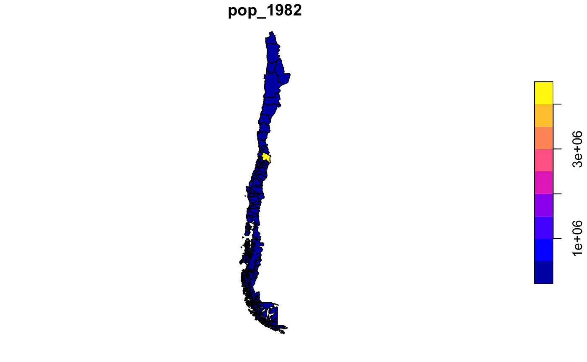

A set of recently created labour market areas (LMAs) for Chile, required to analyze spatial labour market activity and provide a framework to guide spatially-explicit employment policy development. The data set includes 62 LMAs, providing full coverage of the Chilean territory, delineated based on optimisation requirements of self-containment, cohesion and homogeneity of a regionalisation algorithm described in Casado-Díaz et al. (2017), using commuting data from the CHilean Migration (CHIM) database (Rowe & Bell, 2013). Data from the 1982, 1992 and 2002 Chilean Housing and Population census were appended to the set of LMAs to produce a geographic information database. The database contains information on the resident population by five-year age groups, sex, labour force status, industry sector and occupation.
chilelabor
An sf data frame with 62 rows, 138 variables, and a geometry column:
Functional Labour Market Area ID code
Functional Labour Market Area name
Census population for years Y: 1982, 1992, 2002
Area in square kilometers
Population per age group X for year Y: 1982, 1992, 2002. Each age group is represented by a code number as follows= 0-4 (code: 1), 5-9 (2), 10-14 (3), 15-19 (4), 20-24 (5), 25-29 (6), 30-34 (7), 35-39 (8), 40-44 (9), 45-49 (10), 50-54 (11), 55-59 (12), 60-64 (13,) 65-69 (14), 70-74 (15), 75-79 (16), 80-84 (17), 85+ (18)
Population per gender Z for years Y: 1982, 1992, 2002. Codes= (1: Male), (2: Female)
Population per labor force status for years Y: 1982, 1992, 2002. Codes= (1: Employed), (2: Unemployed), (3: Not in the labour force)
Population per industry sector for years Y: 1982, 1992, 2002. Codes= (1: Agriculture), (2: Mining), (3: Manufacturing), (4: Utilities), (5: Construction), (6: Trade), (7: Transport and Communication), (8: Finance), (9: Business Services ), (10: Public Administration), (11: Comm & Personal Services)
Population per Occupation for 1982, 1992, 2002. Codes= (0: Armed Forces), (1: Managers), (2: Professionals), (3: Technicians), (4: Clerks), (5: Tradespeople), (6: Agricultural & Fishery Workers), (7: Craft workers), (8: Plant operators), (9: Laborers)
MultipleRowe F, & Bell M (2013) Creating an integrated database for the analysis of spatial mobility in Chile (Working Paper 02/2013). Queensland Centre for Population Research, School of Geography, Planning and Environmental Management, The University of Queensland, Brisbane, Australia.
Sf object, unprojected. EPSG 4326: WGS84.
if (requireNamespace("sf", quietly = TRUE)) { library(sf) data(chilelabor) plot(chilelabor["pop_1982"]) }